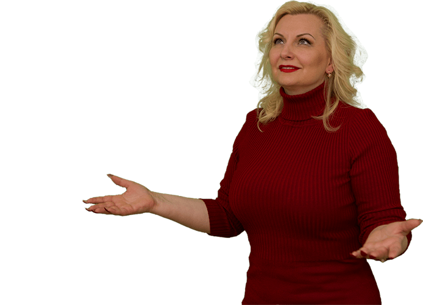
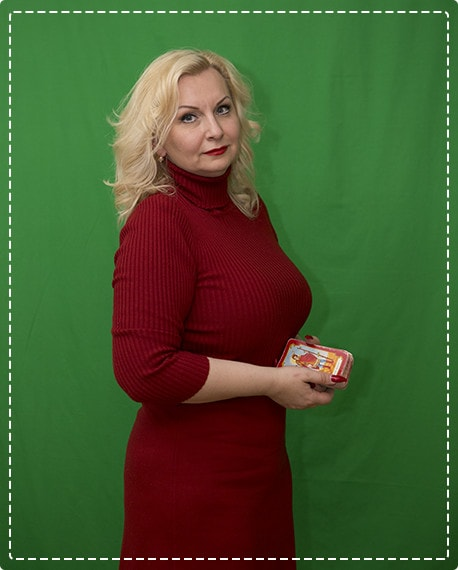
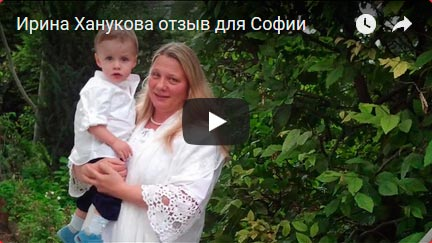
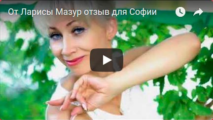
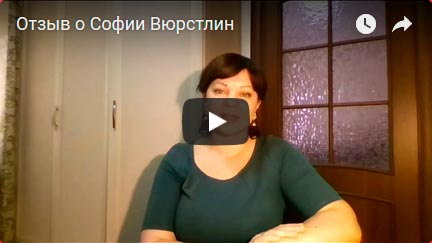

<!DOCTYPE html>
<html lang="ru"></html>
<head>
  <meta charset="UTF-8"/>
  <meta name="viewport" content="width=device-width, initial-scale=1, user-scalable=0, minimum-scale=1, maximum-scale=1"/>
  <meta http-equiv="X-UA-Compatible" content="ie=edge"/>
  <meta name="author" content="Master Vision"/>
  <meta name="description" content="«Рождественские ритуалы на богатство и любовь» от Софии Вюрстлин"/>
  <meta name="keywords" content=""/>
  <meta name="robots" content="index, follow"/>
  <meta name="revisit-after" content="7 days"/>
  <meta property="og:image" content="https://www.mastervision.su/christmas_rites/img/poster.jpg"/>
  <link rel="icon" type="image/x-icon" href="img/favicon.png"/>
  <link rel="shortcut icon" type="image/x-icon" href="img/favicon.png"/>
  <link rel="appendix" href="/sitemap/"/>
  <title>Рождественские ритуалы | София Вюрстлин</title>
  <link rel="stylesheet" href="css/bootstrap.min.css"/>
  <link rel="stylesheet" href="css/styles.css"/>
</head>
<body>
  <section id="first_section">
    <div class="container">
      <div id="contacts"><a href="callto:8-499-346-79-46">8-499-346-79-46</a><a href="skype:add?admin-mastervision">admin-mastervision</a><a href="mailto:info@mastervision.su">info@mastervision.su</a></div>
      <div class="clfix"></div>
      <p class="h_prev">Открытый онлайн-вебинар</p>
      <h1>«Рождественские ритуалы на богатство и любовь»</h1>
      <h2>от Софии Вюрстлин</h2>
      <div class="col-md-6">
        <div class="video_wrapper">
          <iframe src="https://www.youtube.com/embed/nrNzFWZOfAI?rel=0&amp;autoplay=0" allowfullscreen="allowfullscreen"></iframe>
        </div>
      </div>
    </div>
  </section>
  <section id="mail_section">
    <div class="container">
      <form class="mail_section form_newsletter" action="https://aleksandrkudryashov1.autoweboffice.ru/?r=personal/newsletter/sub/add&amp;id=3568&amp;lg=ru" method="post" enctype="application/x-www-form-urlencoded" accept-charset="UTF-8" target="results">
        <div class="col-md-3">
          <h3 class="infront">Запишись сейчас и получи бонус!</h3>
          <p class="infront_submit hide"></p>
        </div>
        <div class="col-md-3">
          <p class="infront">Медитация «Встреча с тотемным животным»</p>
          <p class="span_phone hide"></p>
        </div>
        <div class="col-md-3">
          <div class="email-block">
            <input type="hidden" value="1" name="required_fields[email]"/>
            <input class="mail required" maxlength="255" name="Contact[email]" type="text" placeholder="Ваш email"/>
          </div>
          <div class="phone-block hide">
            <input type="hidden" value="0" name="required_fields[phone_number]"/>
            <input class="phone" maxlength="255" name="Contact[phone_number]" type="number" placeholder="79333333333"/>
          </div>
        </div>
        <div class="col-md-3">
          <button class="button" type="submit">Записаться</button><!--Обязательный параметр. Не удалять и не изменять!-->
          <input type="hidden" value="280" name="Contact[id_newsletter]"/><!--API код канала рекламы-->
          <input type="hidden" value="0" name="Contact[id_advertising_channel_page]"/>
        </div>
      </form>
      <div class="clfix"></div>
    </div>
  </section>
  <section id="second_section">
    <div class="container">
      <h3>Для кого вебинар?</h3>
      <div class="row">
        <div class="col-md-4">
          <div class="red">
            <p>Для тех, кто готов узнать как избавиться от суеты проблем</p>
          </div>
        </div>
        <div class="col-md-4">
          <div class="green">
            <p>Для тех, кто готов действовать во имя своего счастья и счастья своих детей </p>
          </div>
        </div>
        <div class="col-md-4">
          <div class="red">
            <p>Для тех, кто верит , что в мире есть СИЛА , способная помочь человеку реализовать желаемое </p>
          </div>
        </div>
      </div>
      <div class="row">
        <div class="col-md-4">
          <div class="green">
            <p>Для тех, кто готов соединиться с этой силой с помощью карт Таро </p>
          </div>
        </div>
        <div class="col-md-4">
          <div class="red">
            <p>Для тех, кто готов получить дополнительные ресурсы от Вселенной для прохождения своего пути жизни  </p>
          </div>
        </div>
        <div class="col-md-4">
          <div class="green">
            <p>Для тех ,кто ставит цели и хочет получить результат, достигать успеха быстрее и легче</p>
          </div>
        </div>
      </div>
      <button class="button" data-toggle="modal" data-target="#myModalForm">Участвовать</button>
    </div>
  </section>
  <section id="third_section">
    <div class="container">
      <h3>На открытом вебинаре Вы узнаете:</h3>
      <ul class="row">
        <li class="col-md-4">Как поправить здоровье вашего рода </li>
        <li class="col-md-4">Что нужно, чтобы укрепить собственное здоровье </li>
        <li class="col-md-4">О ритуале на привлечение, сохранение и принятие денег</li>
      </ul>
      <ul class="row">
        <li class="col-md-4">Kак  укрепить партнерскую энергию и привлечь партнера</li>
        <li class="col-md-4">О понятии и  улучшении женской и мужской доли</li>
        <li class="col-md-4">Для чего необходим ритуал для вхождения в магическую силу</li>
      </ul>
      <ul class="row">
        <li class="col-md-4">Очищение от негативных программ рода</li>
        <li class="col-md-4">Узнаете о замене родовых программ</li>
        <li class="col-md-4">Что такое инициация в энергии Таро</li>
      </ul>
      <div id="about_veb">
        <p>На этом вебинаре я расскажу Вам о предстоящей встрече в Москве, в период Рождественских каникул. Мы поговорим о  магии Святок, благодаря которой Вы сможете воплощать свои заветные мечты, реализовать желания и управлять судьбой, как по мановению волшебной палочки. Вы также узнаете о том, как притянуть в свою жизнь и навсегда оставить рядом Любовь, Богатство, Удачу и Счастье. </p>
        <button class="button" data-toggle="modal" data-target="#myModalForm">Участвовать</button>
      </div>
    </div>
  </section>
  <section id="fourth_section">
    <div class="container">
      <h3>О тренере</h3>
      <div class="col-md-5"></div>
      <div class="col-md-1"></div>
      <div class="col-md-6">
        <h4>София Вюрстлин</h4>
        <ul id="ul_about">
          <li>Более 30 лет мастер Таро;</li>
          <li>Преподаватель парапсихологии и психологического Таро консультирования в школе альтернативной медицины ”Qadromedica” в Штутгарде в Германии;</li>
          <li>Руководительница НеСоакадемии. Эксперт по межличностным отношениям;</li>
          <li>Практикующий парапсихолог и Мастер Рейки;</li>
          <li>Семейные расстановки (по Берту Хеллингеру);</li>
          <li>Расстановки по Таро (авторская методика);</li>
          <li>Эксперт межличностных взаимоотношений, НЛП-практик отношений в семье, создатель клуба «Просто счастливая женщина»;</li>
          <li>Интернациональный квалифицированный системный бизнес-коуч (ICA);</li>
          <li>Обожаемая жена, любящая мама и очень счастливая Женщина</li>
        </ul>
      </div>
      <div class="clfix"></div><a class="button" href="#" target="_blank">Партнерская программа</a>
    </div>
  </section>
  <section id="fifth_section">
    <div class="container">
      <h3>Отзывы учеников</h3>
      <div class="col-md-6">
        <div id="text_testimonials">
          <div class="carousel slide" data-ride="carousel" id="carousel_text">
            <div class="carousel-inner" role="listbox">
              <div class="item active">
                <div class="carousel-caption">
                  <h5>Татьяна Николаенкова</h5>
                  <p>Мир Таро - это огромный, загадочный, мистический мир. И войти в него просто так не получится. Нужен проводник. София - мудрый проводник в страну Таро. Я училась у разных учителей, благодарна всем. София выделяется своей уникальностью, глубиной познания в этой сфере, большим практическим опытом. Но самое главное, что отличает Мастера - это умение привести ученика туда, где он находится сам. И София делает это, четко ведя нас к цели. Она дала систематизированные знания, постоянно была на связи в чате, попутно отвечая на возникшие вопросы. В течение полугода была для нас мамой, учителем, великолепной женщиной, с которой хотелось брать пример, и Ангелом-Хранителем, безотказно помогала всем в сложнейших жизненных ситуациях. Ее работа - высший пилотаж. София, огромная благодарность от всех учеников нашего курса. Будем счастливы продолжить обучение под твоим крылом. Счастья и новых свершений!!!</p>
                </div>
              </div>
              <div class="item">
                <div class="carousel-caption">
                  <h5>Галина Сарапулова</h5>
                  <p>Софиюшка, я тоже благодарю Вселенную за эту удивительную возможность общения с Вами и обучения у Вас! Заинтересовалась Таро давно, но никак не могла найти Своего Учителя, попав к вам на бесплатный интенсив, сразу поняла, что наконец-то нашла! И как же я рада, что пошла на платный курс! Я просто в восторге! Столько мудрости в ваших словах, столько терпения и такта, с такой щедростью делитесь своими такими ценными знаниями, которых не найдешь в интернете, своим многолетним практическим опытом – благодарю за все! Самое главное, что Вы показываете Таро с таких сторон, о которых многие даже не подозревают! Да, я только немного начала понимать этот удивительный мир Таро, я еще долго обдумываю расклады, и пусть мне еще учиться и учиться, теперь я знаю – у кого! С огромным удовольствием буду учиться у Вас и дальше, тем более у Вас столько интересных задумок и планов! Успехов Вам во всем!</p>
                </div>
              </div>
              <div class="item">
                <div class="carousel-caption">
                  <h5>Lyudmila Suprunova</h5>
                  <p>Меня давно интересовал этот удивительный мир Таро !!! Много изучала разной информации,но пазлы картины моей мечты...никак не складывались. И вот Вселенная сделала мне уникальнейший ПОДАРОК- встречу с Софией !!!!!!За что, я бесконечно благодарна!!!!В своей жизни я много училась и учусь до сих пор. Но УЧИТЕЛЯ с таким широким диапазоном Знаний я встретила впервые!!! Энциклопедия Софии Вюрстлин ( 1000......0 в 1) - это уникальный случай!!! Это Великий Мастер с бесценным кладезем знаний!!! Как же талантливо она превратила все сферы жизни в настоящее искусство!!! Искусство созидания. творения , жизненной мудрости , человеколюбия , преподавания, неподражаемой женственности, безупречного стиля и обаяния!!! Каждое занятие это был Праздник, которого я ждала с нетерпением и хотелось слушать бесконечно! Огромнейшее спасибо и низкий поклон за все Ваши Уроки прекраснейшая София!!! Они не имеют аналогов.</p>
                </div>
              </div>
              <div class="item">
                <div class="carousel-caption">
                  <h5>Регина Марченко</h5>
                  <p>София! Много лет я шла по своему пути души и старалась обойти ТАРО. Меня жизнь не раз к нему возвращала, но я упорно запрещала себе взять его в руки. Но в один прекрасный момент я попала к Вам на интенсив. И вот - сначала в моей душе а потом и в моей голове все перевернулось. И я на ТАРО посмотрела совсем другими глазами. Вы подняли такое желание учиться и владеть этим искусством что в жизни сразу прошли многие корректировки и изменения. А Ваша способность преподнести информацию в таком количестве что в еще неделю открываешь все новое и новое вообще зачаровывает. Безумно приятно Вас слушать и видеть. ВЫ УЧИТЕЛЬ С БОЛЬШОЙ БУКВЫ, ОТ БОГА!!! Ваше видение жизни, законов мировоззрение просто ошеломляет своей мудростью и умением достучаться до души. Спасибо Вам за знания которые Вы нам дали, за вашу чувственность и мудрость, за щедрость Вашей души, открытость и честность в суждениях и анализах. Спасибо что Вы есть!!!!!</p>
                </div>
              </div>
              <div class="item">
                <div class="carousel-caption">
                  <h5>Ирина Николаева</h5>
                  <p>София,Благодарю тебя за прекрасную подачу материала на интенсиве по Таро.Очень интересно и познавательно. С превеликим удовольствием поддерживаю тебя на интенсиве,потому что ты мастер с Большой буквы. Хотя я одна из учениц,тем не менее слушать и впитывать новые знания,а потом и применять их грамотно на практике это подарок. Ещё раз Благодарю что ты у нас есть. Также Благодарю Александра Кудряшова за организацию этого мероприятия,где многие узнали про тебя.И если у них что-то тронет в душе,то могут выйти на качественно новый уровень жизни. София БРАВО! Всё чётко,доступно,понятно. Желаю тебе всего самого наилучшего</p>
                </div>
              </div>
            </div>
            <ol class="carousel-indicators">
              <li class="active" data-target="#carousel_text" data-slide-to="0"></li>
              <li data-target="#carousel_text" data-slide-to="1"></li>
              <li data-target="#carousel_text" data-slide-to="2"></li>
              <li data-target="#carousel_text" data-slide-to="3"></li>
              <li data-target="#carousel_text" data-slide-to="4"></li>
            </ol>
          </div>
        </div>
      </div>
      <div class="col-md-6">
        <div id="video_testimonials">
          <div class="carousel slide" data-ride="carousel" id="carousel_video">
            <ol class="carousel-indicators">
              <li class="active" data-target="#carousel_video" data-slide-to="0"></li>
              <li data-target="#carousel_video" data-slide-to="1"></li>
              <li data-target="#carousel_video" data-slide-to="2"></li>
            </ol>
            <div class="carousel-inner" role="listbox">
              <div class="item active">
                <div class="carousel-caption video_wrapper video_img" data-youtube="YiG6T6GSWBs"></div>
              </div>
              <div class="item">
                <div class="carousel-caption video_wrapper video_img" data-youtube="Ijx7PDX8BVw"></div>
              </div>
              <div class="item">
                <div class="carousel-caption video_wrapper video_img" data-youtube="jO63P4NZLNc"></div>
              </div>
            </div>
          </div>
        </div>
      </div>
    </div>
  </section>
  <footer id="footer">
    <div class="container">
      <p>ИП Кудряшов Александр Анатольевич г. Москва, Новокуркинское шоссе, 27 ИНН 720410077658 ОГРН 315723200065100 </p><a class="conditions" href="http://mastervision.su/oferta.docx">Условия возврата денежных средств</a>
    </div>
  </footer>
  <div class="modal fade" tabindex="-1" role="dialog" id="myModalForm">
    <div class="modal-dialog" role="document">
      <div class="modal-content">
        <button class="close" type="button" data-dismiss="modal" aria-label="Close"><span aria-hidden="true">&times;</span></button>
        <div class="modal-body">
          <form class="form_newsletter" id="modalForm" action="https://aleksandrkudryashov1.autoweboffice.ru/?r=personal/newsletter/sub/add&amp;id=3568&amp;lg=ru" method="post" enctype="application/x-www-form-urlencoded" accept-charset="UTF-8" target="results">
            <h3 class="infront">Запишись сейчас и получи бонус!</h3>
            <p class="infront_submit hide"></p>
            <p class="infront">Медитация «Встреча с тотемным животным»</p>
            <p class="span_phone hide"></p>
            <div class="email-block">
              <input type="hidden" value="1" name="required_fields[email]"/>
              <input class="mail required" maxlength="255" name="Contact[email]" type="text" placeholder="Ваш email"/>
            </div>
            <div class="phone-block hide">
              <input type="hidden" value="0" name="required_fields[phone_number]"/>
              <input class="phone" maxlength="255" name="Contact[phone_number]" type="number" placeholder="79333333333"/>
            </div>
            <button class="button" type="submit">Записаться</button><!--Обязательный параметр. Не удалять и не изменять!-->
            <input type="hidden" value="280" name="Contact[id_newsletter]"/><!--API код канала рекламы-->
            <input type="hidden" value="0" name="Contact[id_advertising_channel_page]"/>
          </form>
        </div>
      </div>
    </div>
  </div>
  <div class="modal fade" tabindex="-1" role="dialog" id="myModal">
    <div class="modal-dialog" role="document">
      <div class="modal-content">
        <div class="modal-header">
          <button class="close" type="button" data-dismiss="modal" aria-label="Close"><span aria-hidden="true">&times;</span></button>
          <h4 class="modal-title">Политика конфиденциальности</h4>
        </div>
        <div class="modal-body">
          <p>Настоящая Политика конфиденциальности персональной информации (далее — Политика) действует в отношении всей информации, которую ООО «Master Vision» и/или его аффилированные лица, могут получить о пользователе во время использования им любого из сайтов, сервисов, служб, программ и продуктов ООО «Master Vision» (далее — Сервисы).</p>
          <p>Использование Сервиса означает безоговорочное согласие пользователя с настоящей Политикой и указанными в ней условиями обработки его персональной информации; в случае несогласия с этими условиями пользователь должен воздержаться от использования Сервиса.</p>
          <p>1. Персональная информация пользователей, которую получает и обрабатывает ООО «Master Vision»</p>
          <p>1.1. В рамках настоящей Политики под «персональной информацией пользователя» понимаются:</p>
          <p>1.1.1. Персональная информация, которую пользователь предоставляет о себе самостоятельно при регистрации (создании учётной записи) или в процессе использования Сервиса, включая персональные данные пользователя. Обязательная для предоставления Сервиса (оказания услуг) информация помечена специальным образом. Иная информация предоставляется пользователем на его усмотрение.</p>
          <p>1.1.2 Данные, которые автоматически передаются Сервису в процессе их использования с помощью установленного на устройстве пользователя программного обеспечения, в том числе IP-адрес, информация из cookie, информация о браузере пользователя (или иной программе, с помощью которой осуществляется доступ к Сервису), время доступа, адрес запрашиваемой страницы.</p>
          <p>1.1.3 Иная информация о пользователе, сбор и/или предоставление которой определено в Регулирующих документах отдельных Сервисов.</p>
          <p>1.2. Настоящая Политика применима только к Сервису ООО «Master Vision». ООО «Master Vision» не контролирует и не несет ответственность за сайты третьих лиц, на которые пользователь может перейти по ссылкам, доступным на сайтах ООО «Master Vision», в том числе в результатах поиска. На таких сайтах у пользователя может собираться или запрашиваться иная персональная информация, а также могут совершаться иные действия.</p>
          <p>1.3. ООО «Master Vision» в общем случае не проверяет достоверность персональной информации, предоставляемой пользователями, и не осуществляет контроль за их дееспособностью. Однако ООО «Master Vision» исходит из того, что пользователь предоставляет достоверную и достаточную персональную информацию по вопросам, предлагаемым в форме регистрации, и поддерживает эту информацию в актуальном состоянии.</p>
          <p>2. Цели сбора и обработки персональной информации о пользователе</p>
          <p>2.1. ООО «Master Vision» собирает и хранит только те персональные данные, которые необходимы для предоставления Сервиса и оказания услуг (исполнения соглашений и договоров с пользователем).</p>
          <p>2.2. Персональную информацию пользователя ООО «Master Vision» может использовать в следующих целях:</p>
          <p>2.2.1. Идентификация стороны в рамках соглашений и договоров с ООО «Master Vision»;</p>
          <p>2.2.2. Предоставление пользователю персонализированных Сервисов;</p>
          <p>2.2.3. Связь с пользователем, в том числе направление уведомлений, запросов и информации, касающихся использования Сервиса, оказания услуг, а также обработка запросов и заявок от пользователя;</p>
          <p>2.2.4. Улучшение качества Сервиса, удобства их использования, разработка новых Сервисов и услуг;</p>
          <p>2.2.5. Таргетирование рекламных материалов;</p>
          <p>2.2.6. Проведение статистических и иных исследований на основе обезличенных данных.</p>
          <p>3. Условия обработки персональной информации пользователя и её передачи третьим лицам</p>
          <p>3.1. ООО «Master Vision» хранит персональную информацию пользователей в соответствии с внутренними регламентами конкретных сервисов.</p>
          <p>3.2. В отношении персональной информации пользователя сохраняется ее конфиденциальность, кроме случаев добровольного предоставления пользователем информации о себе для общего доступа неограниченному кругу лиц. При использовании отдельных Сервисов пользователь соглашается с тем, что определённая часть его персональной информации становится общедоступной.</p>
          <p>3.3. ООО «Master Vision» вправе передать персональную информацию пользователя третьим лицам в следующих случаях:</p>
          <p>3.3.1. Пользователь выразил свое согласие на такие действия;</p>
          <p>3.3.2. Передача необходима в рамках использования пользователем определенного Сервиса либо для оказания услуги пользователю;</p>
          <p>3.3.3. Передача предусмотрена российским или иным применимым законодательством в рамках установленной законодательством процедуры;</p>
          <p>3.3.4. Такая передача происходит в рамках продажи или иной передачи бизнеса (полностью или в части), при этом к приобретателю переходят все обязательства по соблюдению условий настоящей Политики применительно к полученной им персональной информации;</p>
          <p>3.3.5. В целях обеспечения возможности защиты прав и законных интересов ООО «Master Vision» или третьих лиц в случаях, когда пользователь нарушает Пользовательское соглашение сервиса.</p>
          <p>3.4. При обработке персональных данных пользователей ООО «Master Vision» руководствуется Федеральным законом РФ «О персональных данных».</p>
          <p>4. Изменение пользователем персональной информации</p>
          <p>4.1. Пользователь может в любой момент изменить (обновить, дополнить) предоставленную им персональную информацию или её часть, а также параметры её конфиденциальности, воспользовавшись функцией редактирования персональных данных в персональном разделе соответствующего Сервиса.</p>
          <p>4.2. Пользователь также может удалить предоставленную им в рамках определенной учетной записи персональную информацию, воспользовавшись функцией «Отписаться от рассылки» в персональном разделе соответствующего Сервиса При этом удаление аккаунта может повлечь невозможность использования некоторых Сервисов.</p>
          <p>5. Меры, применяемые для защиты персональной информации пользователей ООО «Master Vision» принимает необходимые и достаточные организационные и технические меры для защиты персональной информации пользователя от неправомерного или случайного доступа, уничтожения, изменения, блокирования, копирования, распространения, а также от иных неправомерных действий с ней третьих лиц.</p>
          <p>6. Изменение Политики конфиденциальности. Применимое законодательство</p>
          <p>6.1. ООО «Master Vision» имеет право вносить изменения в настоящую Политику конфиденциальности. При внесении изменений в актуальной редакции указывается дата последнего обновления. Новая редакция Политики вступает в силу с момента ее размещения, если иное не предусмотрено новой редакцией Политики. Действующая редакция всегда находится на странице по адресу http://mastervision.su/confidential/.</p>
          <p>6.2. К настоящей Политике и отношениям между пользователем и ООО «Master Vision», возникающим в связи с применением Политики конфиденциальности, подлежит применению право Российской Федерации.</p>
          <p>7. Обратная связь. Вопросы и предложения</p>
          <p>Все предложения или вопросы по поводу настоящей Политики следует сообщать в Службу поддержки пользователей Mastervision (info@mastervision.su)</p>
        </div>
      </div>
    </div>
  </div>
  <script src="js/html5.js"></script>
  <script src="js/jquery.min.js"></script>
  <script src="js/bootstrap.min.js"></script>
  <script src="js/scripts.js"></script>
  <iframe name="results" style="display:none;"></iframe>
</body>